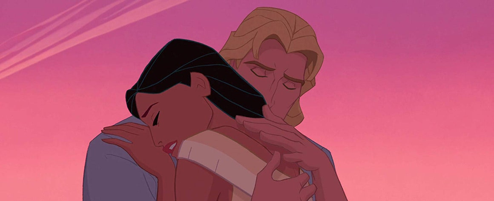

Kendall Jenner confirme le retour des tongs à plateforme

Ces nouveaux films Disney que l'on attend le plus cette année
14 questionnements de Carrie Bradshaw qui sont toujours d'actualité
Les plus belles maisons à louer en France cet été
À 45 ans, Jessica Chastain remporte (enfin) son premier Oscar